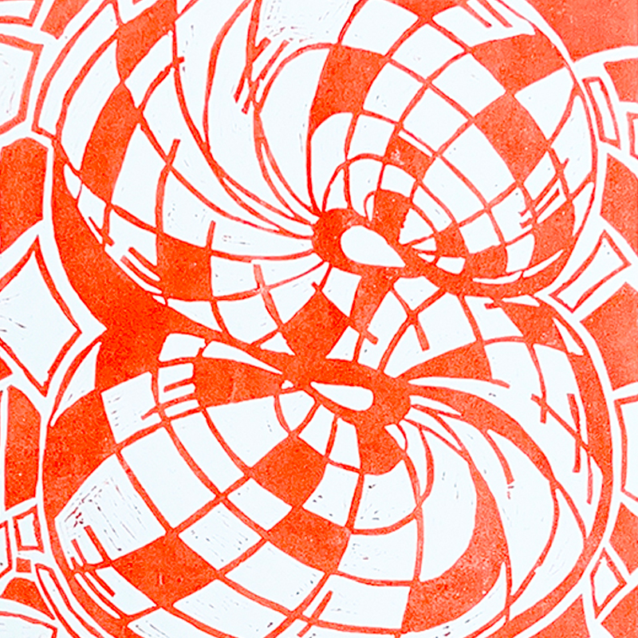
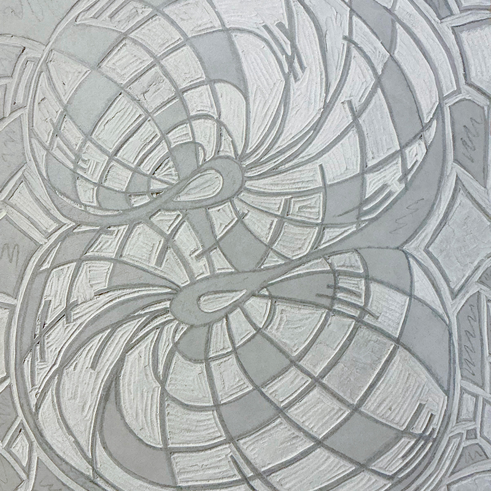
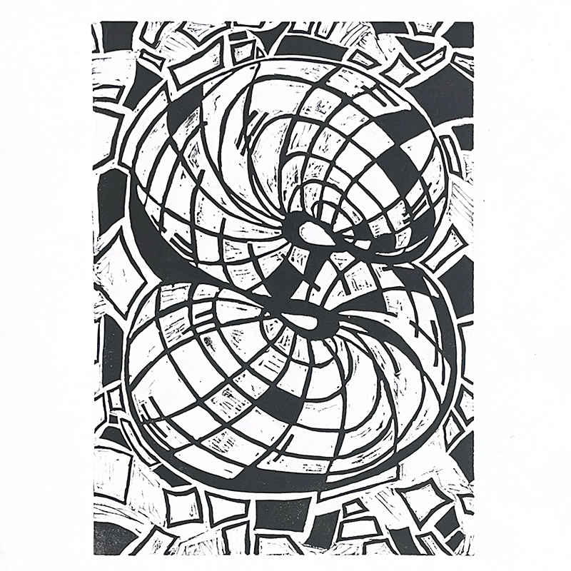
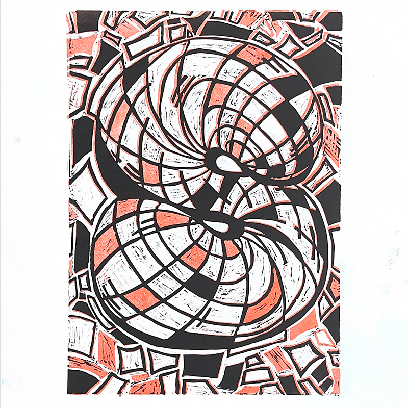
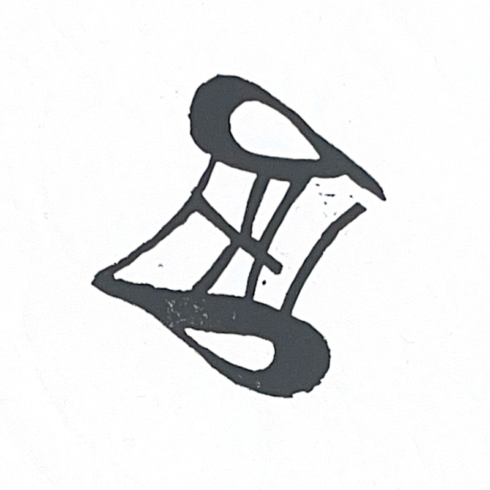
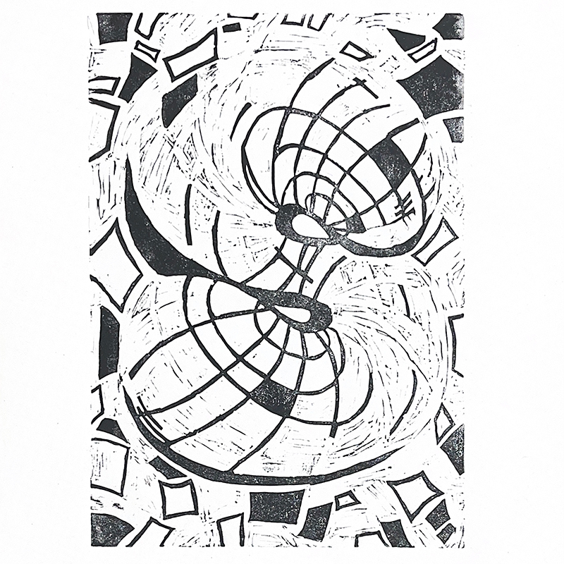
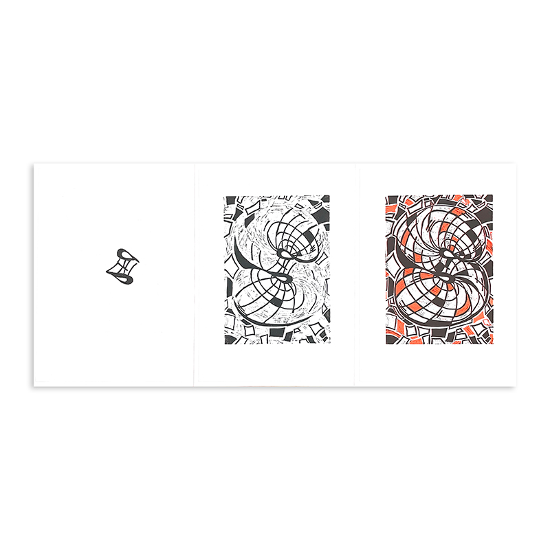
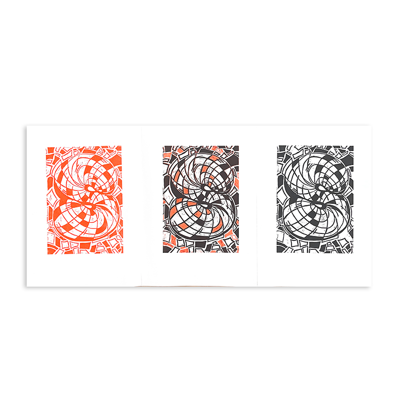

Leporello Lettrine "S"
Linogravure
2025
Projet de linogravure : création d’une lettrine originale - lettre S
Gravure sur linoléum à l’aide de gouges puis impression en bichromie.
Technique de la plaque perdue, qui consiste à imprimer la totalité du motif puis d’en enlever certaines parties pour varier les impressions.
Résultat final présenté sous forme de 2 leporellos montrant l’évolution de la lettrine - on devine sa «création» étapes par étapes.







